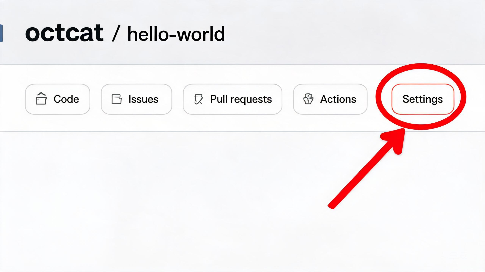
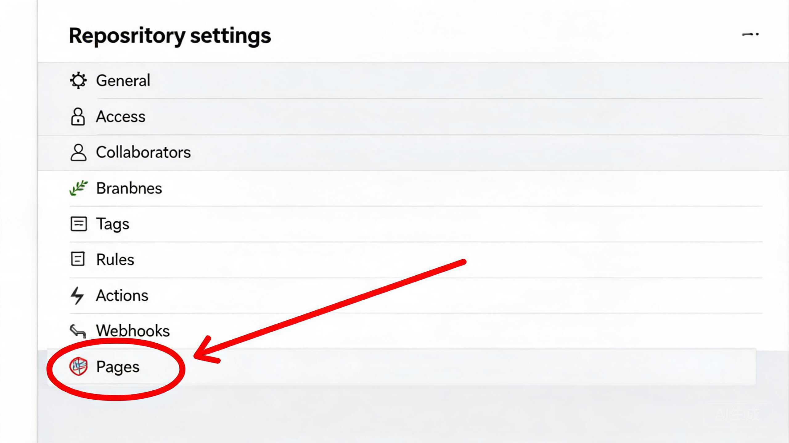
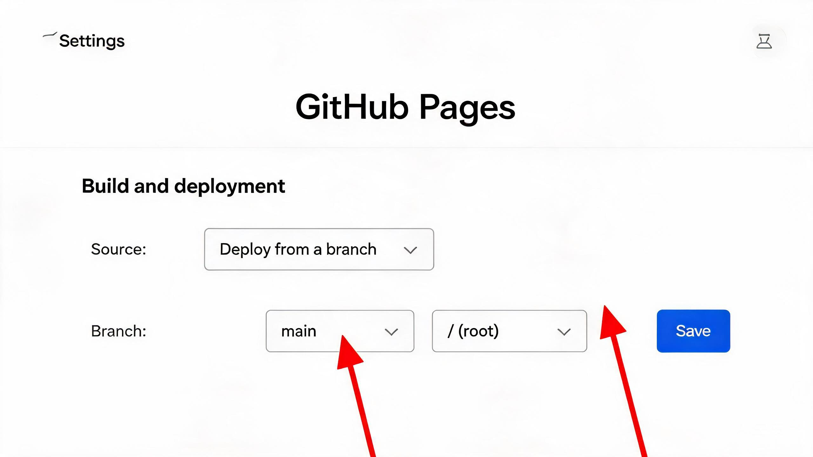

一、版本说明
你提到的"SAP 800版本"通常有两种可能含义，建议先确认清楚：
SAP ECC 6.0 EHP8
即 Enhancement Package 8，是SAP ECC的最终增强包版本（2016年发布）。目前很多制造企业仍在使用，是传统SAP ERP的成熟稳定版本。[1]
SAP GUI 800
即SAP客户端（前端）版本号为800。这只是登录界面的版本，不影响后台业务逻辑，核心仍取决于你使用的是ECC还是S/4HANA。[2]
无论哪个版本，CO（Controlling，管理会计）模块的核心业务逻辑是相通的。本规划以制造业成本核算核心流程为主线，兼顾ECC与S/4HANA的差异点。
二、学习路径总览
制造业成本会计涉及的SAP知识体系非常庞大，建议按照"基础 → 核心 → 深化 → 实战"的路径循序渐进。
graph TD
A[第一阶段: SAP基础入门
2周] --> B[第二阶段: CO核心模块
8周]
B --> C[第三阶段: 产品成本与物料账
8周]
C --> D[第四阶段: 月结年结实战
6周]
D --> E[持续深化: CO-PA & 报表分析
持续]
style A fill:#dbeafe,stroke:#2563eb,stroke-width:2px,color:#1e3a8a
style B fill:#cffafe,stroke:#0891b2,stroke-width:2px,color:#164e63
style C fill:#d1fae5,stroke:#059669,stroke-width:2px,color:#064e3b
style D fill:#fef3c7,stroke:#d97706,stroke-width:2px,color:#78350f
style E fill:#ede9fe,stroke:#7c3aed,stroke-width:2px,color:#4c1d95
SAP基础入门
熟悉SAP界面操作、组织架构、主数据概念、FI/CO集成关系，掌握常用事务码的使用方法。
CO核心模块
成本中心会计、内部订单、成本要素会计，理解间接费用的归集与分配逻辑。
产品成本 & 物料账
标准成本估算、生产订单结算、在制品计算、物料分类账（实际成本），这是制造业成本会计的核心。
月结年结实战
掌握完整月末结账流程，理解每一步的业务含义、操作方法和常见问题排查。
三、分阶段学习路线
第一阶段：SAP基础入门（第1-2周）
目标：能独立登录系统，看懂基本界面，理解SAP的组织架构和主数据概念。
- SAP GUI操作基础：登录、事务码（T-code）使用、常用菜单路径
- 组织架构：公司代码、控制范围、成本中心标准层次
- 主数据概念：物料主数据、供应商、客户、成本中心、成本要素
- FI/CO基本关系：财务会计(FI)与管理会计(CO)的区别与集成
- 凭证 basics：FB03看凭证、FS10N看科目余额、S_ALR_87013611看成本中心报表
第二阶段：CO核心模块（第3-10周）
目标：理解成本中心会计和内部订单的完整业务流程，能独立完成间接费用的归集与分配。
- 成本要素会计（CO-OM-CEL）：初级成本要素、次级成本要素的概念与配置
- 成本中心会计（CO-OM-CCA）：成本中心主数据、计划（KP06）、实际过账、分配（KSV5）、分摊（KSU5）、作业类型（KP26）
- 内部订单（CO-OM-OPA）：订单主数据、预算管理、结算规则（KO88）
- 统计指标：用于成本分摊的统计指标定义与过账（KB31N）
- 常用报表：S_ALR_87013611（成本中心实际/计划比较）
第三阶段：产品成本控制（第11-18周）
目标：这是制造业成本会计的重中之重，必须深入掌握。
- 产品成本计划（CO-PC-PCP）：BOM、工艺路线、工作中心、标准成本估算（CK11N/CK13N）、成本构成结构、标记与发布（CK24）
- 成本对象控制（CO-PC-OBJ）：生产订单生命周期、收货（MIGO 101）、发料（MIGO 261）、报工（CO11N）、作业成本重估（CON2/MFN1）
- 在制品（WIP）计算：在制品概念、计算逻辑（KKAO）、结算规则
- 差异计算：目标成本 vs 实际成本、差异分类（投入差异/产出差异）、KKS1/KKS2
- 订单结算：CO88批量结算、结算规则、差异过账逻辑
第四阶段：物料分类账 & 实际成本（第19-22周）
目标：理解物料分类账的原理，掌握实际成本核算流程。
- 物料分类账基本概念：为什么需要ML、单级/多级价格确定
- 物料账主数据：CKM1/CKM3查看物料账数据
- 月末物料账处理全流程（CKMLCP）：选择 → 确定顺序 → 单级处理 → 多级处理 → 消耗重估 → 记账清算
- 实际成本核算：期末实际单价计算、差异分摊逻辑
- 常见问题：未分摊差异的原因排查与处理[3]
第五阶段：月末结账 & 年末结账（第23-26周）
目标：完整掌握月末年末结账全流程，能独立完成结账操作。
- 月结前检查清单：MM模块、FI模块、CO模块
- CO月结四步法：分摊分配 → 作业价格重估 → 在制品与差异 → 订单结算
- 物料账月结：CKMLCP全流程操作
- 期间开关：MMPV（物料期间）、OB52（会计期间）
- 年末结账特殊处理：余额结转、会计年度变更
四、CO模块知识体系详解
CO（Controlling，管理会计）模块是成本会计的核心工作区域。以下是CO模块的子模块构成及与你日常工作的关系：
graph TD
CO[CO 管理会计] --> OM[CO-OM 间接费用控制]
CO --> PC[CO-PC 产品成本控制]
CO --> PA[CO-PA 获利能力分析]
OM --> CEL[成本要素会计
初级/次级成本要素]
OM --> CCA[成本中心会计
费用归集与分摊]
OM --> OPA[内部订单
项目/专项费用]
OM --> ABC[作业成本法
Activity-Based Costing]
PC --> PCP[产品成本计划
标准成本估算 CK11N]
PC --> OBJ[成本对象控制
生产订单结算 CO88]
PC --> ML[物料分类账
实际成本 CKMLCP]
PA --> KE30[获利能力报表]
style CO fill:#2563eb,stroke:#1d4ed8,stroke-width:2px,color:#fff
style PC fill:#059669,stroke:#047857,stroke-width:2px,color:#fff
style ML fill:#d97706,stroke:#b45309,stroke-width:2px,color:#fff
制造业成本会计核心事务码速查表
| 业务领域 | 事务码 | 功能说明 | 使用频率 |
|---|---|---|---|
| 成本中心会计 | KS01/KS02/KS03 | 成本中心主数据创建/修改/显示 | 中 |
| KP06 | 成本中心成本要素计划 | 中 | |
| KP26 | 作业类型价格计划 | 中 | |
| KSV5 | 分配（Distribution） | 高 | |
| KSU5 | 分摊（Assessment） | 高 | |
| 标准成本估算 | CK11N | 创建标准成本估算 | 高 |
| CK13N | 显示成本估算 | 高 | |
| CK24 | 标记与发布标准价格 | 高 | |
| CKM3 | 物料价格分析（查看成本构成） | 高 | |
| 生产订单结算 | MIGO | 货物移动（发料/收货） | 中 |
| KKAO | 在制品（WIP）计算 | 高 | |
| KKS1 | 订单差异计算 | 高 | |
| CO88 | 生产订单批量结算 | 高 | |
| 物料分类账 | CKMLCP | 物料分类账期末处理（全流程） | 高 |
| CKMI | 物料账期末结账索引 | 中 | |
| 期间管理 | MMPV | 打开物料期间 | 高 |
| OB52 | 打开/关闭会计期间 | 高 | |
| OKP1 | CO期间锁定 | 中 | |
| 常用报表 | S_ALR_87013611 | 成本中心实际/计划对比 | 高 |
| KE30 | 获利能力分析报表 | 中 |
核心事务码详细操作指南
点击下方每个事务码可展开查看详细的业务逻辑、操作步骤、关键检查点和常见问题。
📌 业务逻辑
根据物料主数据、BOM（物料清单）、工艺路线和成本核算变式，计算物料的标准成本。这是CO模块成本核算的起点。
📝 操作步骤
- 输入事务码 CK11N
- 输入基本参数：物料编号、工厂代码、成本核算变式（如PC01）、成本核算日期、成本核算批量
- 系统自动读取BOM结构、工艺路线数据，计算材料成本和制造成本
- 查看成本组件分解，分析成本结构合理性
- 决定是否标记并发布为标准成本
✅ 关键检查点
- 成本核算变式选择是否正确
- 成本构成结构（OKTZ）是否已激活
- 检查是否有"成本构成结构没有被激活"等报错
📌 业务逻辑
将CK11N计算出的标准成本估算结果，标记并正式发布为物料的标准价格。分为标记（Marking）和发布（Release）两步。
📝 操作步骤
第一步：标记价格
- 进入CK24，初始界面显示"价格更新：标记标准价格"
- 输入年/月、公司代码、工厂代码、成本核算变式、物料编码
- 点击"执行"或"标记"按钮
- 查看运行结果，检查是否有错误
第二步：发布价格
- 标记完成后，点击"发布"按钮，界面切换为发布界面
- 选择要发布的物料，点击"执行"或"发布"按钮
- 发布成功后，物料主数据中"当前"的标准价格更新
✅ 关键检查点
- 发布后检查MM03物料主数据，确认"当前"标准价格已更新
- 发布会生成价格变动凭证，若物料有库存，会生成FI凭证
📌 业务逻辑
KSV5（分配）：将发送方成本中心的初级成本要素按规则分配到接收方，接收方能看到原始成本要素。
KSU5（分摊）：将发送方成本中心的成本（可含初级和次级成本要素）按统计指标分摊到接收方，接收方看不到原始成本要素。
📝 操作步骤
- 先创建循环：KSV1（分配）/ KSU1（分摊），配置发送方、接收方和分配规则
- 维护统计指标实际值（KB31N）—— 仅分摊循环需要
- 执行循环：KSV5 / KSU5（填写执行期间、会计年度、循环号）
- 先测试运行，确认无误后再正式执行
- 通过S_ALR_87013611检查成本中心余额是否正确
✅ 关键检查点
- 辅助成本中心期末余额是否结转为零
- 统计指标是否已正确维护（KB31N）
- 循环的迭代方式是否正确（迭代 vs 累计）
📊 分配 vs 分摊区别
| 特性 | 分配（KSV5） | 分摊（KSU5） |
|---|---|---|
| 成本要素类型 | 仅初级成本要素 | 初级+次级成本要素 |
| 接收方可见性 | 可看到原始成本要素 | 看不到原始成本要素 |
| 分配依据 | 固定比例/作业量等 | 统计指标（如面积、人数） |
📌 业务逻辑
计算成本中心当月各作业类型的实际作业单价。核心公式：
计算结果写入COST表，但不会自动更新已保存的生产订单。
📝 前置步骤
- 成本中心费用已归集（FI过账 + 分摊分配完成）
- 实际报工已完成（CO11N）
- 已执行KSS2（实际成本分割），将总费用拆分到各作业类型
📝 操作步骤
- 输入事务码 KSII
- 输入成本中心范围、作业类型、期间、会计年度
- 先测试运行，检查结果后再正式执行
- 通过KSBT查看计划价（值类型1）和实际价（值类型4）对比
✅ 关键检查点
- 确保所有报工已完成（作业量不能为0，否则报错）
- 检查作业类型主数据中"实际价格指示符"配置
- 价格单位可能自动缩放为100或1000（避免单价过小）
📌 为什么需要重估
期中报工（CO11N）使用的是计划作业价格（KP26），订单成本是"计划"成本。月末KSII算出实际价后，需要通过CON2/MFN1将差额补记/冲销到生产订单，使订单成本真实化。
📝 重估逻辑
借：生产订单（借记次级成本要素）
贷：发出作业的成本中心
📝 操作步骤
CON2（批量重估）：
- 输入事务码 CON2
- 输入工厂、期间、会计年度
- 先测试运行确认无误后再正式执行
- 查看运行结果，处理错误记录
MFN1（单个订单重估）：
- 输入事务码 MFN1
- 输入工厂、期间、订单号，执行
✅ 关键检查点
- 工单状态不能是CLSD（关闭），否则无法写入重估成本
- 检查运行日志中的错误记录
- 重估后成本中心余额应趋近于零
📌 业务逻辑
计算月末未完工生产订单的在制品（WIP）价值。WIP是订单已投入但尚未完成的部分，需要在资产负债表中确认为资产。
投入 = 订单领料 + 报工作业成本
产出 = 订单收货数量 × 产成品标准价
📝 操作步骤
- 输入事务码 KKAO（批量）/ KKAX（单个）
- 输入工厂、期间、会计年度
- 选择订单类型、结果分析版本（如0版本）
- 先测试运行，再正式执行
- 查看结果：在制品价值 = 投入 - 产出
✅ 关键检查点
- 订单必须有实际领料和报工记录
- 订单状态需为REL（已释放），不能是CLSD（关闭）
- KKAO只计算WIP，不生成FI凭证，需后续通过CO88结算才生成凭证
📌 业务逻辑
计算生产订单的实际成本与目标成本（标准成本）之间的差异。差异计算是成本分析的核心，也是结算的前置步骤。
📝 操作步骤
KKS1（单个订单）：
- 输入事务码 KKS1
- 输入工厂代码、期间、订单号，执行
KKS2（批量计算）：
- 输入事务码 KKS2
- 输入工厂代码、期间，选择订单类型等条件
- 执行，批量计算差异
📊 差异分类
| 差异类型 | 说明 |
|---|---|
| 投入差异 | 实际投入与标准投入的差额，包括价格差异和数量差异 |
| 产出差异 | 实际产出与标准产出的差额 |
| 资源利用差异 | 使用了不同的物料或作业类型 |
✅ 关键检查点
- 确认订单状态正确（DLV/TECO等）
- 通过KOB1查看订单成本和差异分析明细
- 差异计算是分析步骤，不直接生成凭证，结算后才过账
📌 业务逻辑
将生产订单的最终成本（含WIP和差异）结转到相应的FI科目。根据订单状态不同，结算逻辑不同：
- 未完工订单（REL状态）：计算WIP，借记WIP资产科目，贷记生产成本科目
- 已完工订单（TECO/DLV状态）：计算差异，结转到产成品库存和差异科目
📝 前置步骤
- 费用分摊分配已完成（KSU5/KSV5）
- 作业价格重估已完成（CON2/MFN1）
- WIP计算已完成（KKAO）
- 差异计算已完成（KKS1/KKS2）
📝 操作步骤
- 输入事务码 CO88
- 输入结算期间、公司代码、工厂、订单类型等
- 先测试运行（勾选"测试运行"），确认无误后再正式执行
- 查看运行结果和生成的凭证
✅ 关键检查点
- 检查生成的FI凭证是否正确
- 检查生产成本科目是否结平（FS10N）
- 订单已CLSD（关闭）无法结算，需先取消关闭
📌 业务逻辑
物料分类账（Material Ledger）的期末结算事务码。用于月末将物料的实际成本差异按BOM结构逐级上滚，计算物料的实际成本。是标准成本法下的实际成本核算工具。
📝 操作步骤（CKMLCP全流程）
| 步骤 | 操作 | 说明 |
|---|---|---|
| 1 | 选择期间 | 选择正确的工厂和期间 |
| 2 | 确定顺序 | 系统自动确定多级处理的物料顺序 |
| 3 | 单级处理确定 | 计算单级（单层）差异——物料自身的差异 |
| 4 | 多级处理确定 | 计算多层差异上卷——下层物料差异滚到上层 |
| 5 | 消耗重估 | 将差异分摊到消耗方（销售成本等） |
| 6 | 记账清算 | 生成物料账过账凭证（需先MMPV开新期间） |
📊 单级 vs 多级区别
- 单级价格确定：只计算物料自身的差异，按消耗与库存比例分摊
- 多级价格确定：将多层差异按BOM逐级上滚到产成品，最终确定完整实际成本
✅ 关键检查点
- 必须先打开新物料期间（MMPV），才能执行记账清算
- 检查未分配/未分摊差异，分析尾差原因
- 通过CKM3查看物料价格分析
📌 业务逻辑
用于打开或关闭物料账期。在月末物料分类账结算前，需确保目标期间已打开，否则物料移动无法过账。
📝 操作步骤
- 输入事务码 MMPV
- 输入会计年度、期间、工厂范围
- 选择"开启"操作，执行
- 检查物料期间状态是否更新
✅ 关键检查点
- 必须逐月连续开启，不能跳跃（如从11月直接跳到1月，必须先开12月）
- 与财务账期（OB52）同步打开
- 多工厂环境下，确保所有相关工厂同时开启
📌 业务逻辑
控制财务过账期间的打开和关闭。根据期间变式确定会计期间，通过OB52控制哪些期间可以对哪些科目类型开放过账。
📝 操作步骤
- 输入事务码 OB52
- 选择期间变式（如0001）和会计年度
- 对目标期间行项目，设置"从期间"和"到期间"
- 按科目类型分别控制：A=资产、D=客户、K=供应商、M=物料、S=总账
- 保存
✅ 关键检查点
- 确认期间变式已正确分配给公司代码
- 确认科目类型正确（过账科目类型与OB52中维护的一致）
- 打开新期间前，确认上期间业务已完成
五、日常成本核算工作要点
作为制造业成本会计，你的日常工作主要围绕以下几个方面展开：
1. 标准成本维护
- 新物料标准成本估算与发布（CK11N + CK24）
- BOM/工艺路线变更后的成本重估
- 月度/季度标准成本滚动更新
- 成本构成分析：料、工、费的结构占比
2. 生产订单监控
- 检查生产订单的发料、报工是否正常
- 异常订单处理：差异过大、收货异常等
- 工单关闭前的成本完整性检查
3. 成本中心费用监控
- 各成本中心费用发生情况监控
- 费用异常波动分析与原因排查
- 部门间费用分摊的合理性检查
4. 差异分析
- 采购价格差异（PPV）分析
- 生产订单投入差异与产出差异分析
- 量差 vs 价差的分解分析
六、月末结账完整流程
月末结账是成本会计最重要的工作之一。CO月结遵循严格的层级递进、清零控制原则，步骤顺序不可颠倒。[4]
graph TD
A1[月结前检查] --> A2[MM模块预关闭]
A2 --> A3[确认所有业务单据过账完成]
A3 --> B1[执行分配 KSV5]
B1 --> B2[执行分摊 KSU5]
B2 --> B3[辅助成本中心余额=0]
B3 --> C1[计算实际作业价格 KSII]
C1 --> C2[作业价格重估 CON2/MFN1]
C2 --> C3[成本结转至生产订单]
C3 --> D1[在制品计算 KKAO]
D1 --> D2[差异计算 KKS1/KKS2]
D2 --> E1[生产订单结算 CO88]
E1 --> E2[物料分类账 CKMLCP]
E2 --> E3[差异结转至销售成本/库存]
E3 --> F1[打开新期间 MMPV/OB52]
F1 --> F2[月结后检查]
F2 --> F3[出具成本报表]
style A1 fill:#e0e7ff,stroke:#4f46e5,stroke-width:2px,color:#3730a3
style A2 fill:#e0e7ff,stroke:#4f46e5,stroke-width:2px,color:#3730a3
style A3 fill:#e0e7ff,stroke:#4f46e5,stroke-width:2px,color:#3730a3
style B1 fill:#dbeafe,stroke:#2563eb,stroke-width:2px,color:#1e3a8a
style B2 fill:#dbeafe,stroke:#2563eb,stroke-width:2px,color:#1e3a8a
style B3 fill:#cffafe,stroke:#0891b2,stroke-width:2px,color:#164e63
style C1 fill:#d1fae5,stroke:#059669,stroke-width:2px,color:#064e3b
style C2 fill:#d1fae5,stroke:#059669,stroke-width:2px,color:#064e3b
style C3 fill:#bbf7d0,stroke:#16a34a,stroke-width:2px,color:#14532d
style D1 fill:#fef3c7,stroke:#d97706,stroke-width:2px,color:#78350f
style D2 fill:#fef3c7,stroke:#d97706,stroke-width:2px,color:#78350f
style E1 fill:#fde68a,stroke:#ca8a04,stroke-width:2px,color:#713f12
style E2 fill:#fcd34d,stroke:#b45309,stroke-width:2px,color:#78350f
style E3 fill:#fecaca,stroke:#dc2626,stroke-width:2px,color:#7f1d1d
style F1 fill:#ede9fe,stroke:#7c3aed,stroke-width:2px,color:#4c1d95
style F2 fill:#ede9fe,stroke:#7c3aed,stroke-width:2px,color:#4c1d95
style F3 fill:#ede9fe,stroke:#7c3aed,stroke-width:2px,color:#4c1d95
月结详细步骤清单
| 步骤 | 操作内容 | 事务码 | 关键检查点 |
|---|---|---|---|
| 【一、月结前准备】 | |||
| 1 | 检查所有采购发票是否校验入账 | MR11 / ME2N | 确保GR/IR科目清理完毕 |
| 2 | 检查所有生产订单报工是否完成 | COOIS | 本期产出工单是否全部报工 |
| 3 | 检查物料移动是否全部过账 | MB51 / MB52 | 确认无未过账物料凭证 |
| 4 | CO期间锁定（防止期间内过账） | OKP1 | 锁定成本中心/订单过账 |
| 【二、成本中心费用分配分摊】 | |||
| 5 | 执行成本中心分配 | KSV5 | 辅助成本中心→生产性成本中心 |
| 6 | 执行成本中心分摊 | KSU5 | 按统计指标分摊公共费用 |
| 7 | 检查辅助成本中心余额是否为0 | S_ALR_87013611 | 辅助成本中心期末余额应为零 |
| 【三、作业价格重估】 | |||
| 8 | 计算实际作业价格 | KSII | 基于实际成本/实际作业量计算 |
| 9 | 作业价格重估（按订单） | CON2 / MFN1 | 将作业价格差异结转至生产订单 |
| 【四、在制品与差异计算】 | |||
| 10 | 在制品（WIP）计算 | KKAO / KKAX | 未完工工单计算在制品金额 |
| 11 | 订单差异计算 | KKS1 / KKS2 | 完工工单计算总差异并分类 |
| 【五、订单结算】 | |||
| 12 | 生产订单结算 | CO88 / KO88 | WIP和差异正式过账到FI模块[5] |
| 13 | 检查生产成本科目是否结平 | FS10N / FAGLB03 | 生产成本科目期末余额应为零 |
| 【六、物料分类账结算】 | |||
| 14 | 物料账：选择期间 | CKMLCP | 选择正确的工厂和期间 |
| 15 | 物料账：确定顺序 | CKMLCP | 确定多级处理的物料顺序 |
| 16 | 物料账：单级处理确定 | CKMLCP | 计算单级（单层）差异 |
| 17 | 物料账：多级处理确定 | CKMLCP | 计算多层差异上卷 |
| 18 | 物料账：消耗重估 | CKMLCP | 将差异分摊到消耗方 |
| 19 | 打开新物料期间 | MMPV | 打开下一期间的物料账 |
| 20 | 物料账：记账清算 | CKMLCP | 生成物料账过账凭证 |
| 【七、月结收尾】 | |||
| 21 | 检查未分摊差异 | CKMLCP / CKM3 | 分析尾差原因，必要时手工调整[3] |
| 22 | 打开/关闭会计期间 | OB52 | 关闭旧期间，打开新期间 |
| 23 | 出具成本报表与分析 | KE30 / S_ALR报表 | 成本分析、差异分析、毛利分析 |
七、制造业特殊业务场景成本处理
制造业日常生产中，除了标准的生产订单成本核算外，还会遇到返工、报废、委外加工、联副产品等特殊场景。掌握这些场景的成本处理方式，是成本会计从入门到精通的关键。
📌 业务场景
对不合格产品进行修复或重新包装处理，使其达到合格标准。常见场景：售后退回产品重新换包材、修复破损产品、拆解不合格品等。
📝 SAP处理方式
| 返工类型 | 创建方式 | 成本去向 |
|---|---|---|
| 修复型返工 | CO01创建返工订单（订单类型PP05等），关联原订单 | 成本追加到原成品价值中 |
| 拆解型返工 | 独立返工订单，结算规则设为成本中心 | 作为生产损耗计入损益 |
| 售后返工/换包 | 独立订单，结算至成本中心 | 计入主营业务成本-返工费 |
✅ 关键操作步骤
- CO01：创建返工生产订单（选择返工订单类型）
- CO02：维护返工订单的结算规则（至物料/成本中心/内部订单）
- MIGO：返工领料/收货
- CO11N：返工报工
- KO88/CO88：返工订单结算
💡 注意事项
- 返工订单必须配置正确的结算规则，否则成本无法正确结转
- 若原订单已关闭（CLSD），返工成本只能结算至成本中心或内部订单
- 返工过程中物料移动需正确处理，避免库存价值失真
- 可通过OPKT配置结算参数文件，OPJH将订单类型关联结算参数文件
📌 业务场景
生产过程中产生的废品损失，包括可修复废品和不可修复废品。废品损失通过废品通知单、废品交库单等原始记录归集。
📝 成本核算逻辑
| 项目 | 借方 | 贷方 |
|---|---|---|
| 可修复废品修复费用 | 废品损失 | 原材料/应付职工薪酬等 |
| 不可修复废品成本 | 废品损失 | 生产成本 |
| 废品残值 | 原材料/银行存款 | 废品损失 |
| 责任人赔偿 | 其他应收款 | 废品损失 |
| 净损失结转 | 生产成本（制造费用） | 废品损失 |
✅ SAP处理要点
- 废品损失按车间、成本对象分专栏核算
- 月末"废品损失"科目一般无余额
- 通过OBYC配置自动过账科目（GBB+AUF等）
- 月结时通过KO88结算，在制品冲回，差异转出
- 不可修复废品：成本按已耗成本归集，残值和赔偿冲减损失
📌 业务场景
将原材料发送给外部供应商，由供应商加工后收回成品或半成品。分为全委外（原材料完全由本方提供）和工序委外（部分环节外包）。
📝 全委外处理流程
- 物料主数据：采购类型F（外购），特殊采购类别L（委外）
- ME21N：创建委外PO，维护加工单价及附加费用（条件技术PB00等）
- MB1B/ME2O：将原材料发给供应商（541移动类型，转移到供应商寄售库存）
- MIGO：委外成品收货，按PO价格更新库存价值，生成应付暂估
- MIRO：发票校验，确认应付账款
💰 成本构成
- 原材料成本：由本方提供，发出时计入委外加工物资
- 加工费：支付给供应商，收货时计入库存价值
- 间接管理费用：可通过Costing Sheet按比例叠加（如原料×9.05%）
💡 注意事项
- 委外成本在采购收货时计算，而非销售开单时
- 工序委外中，物料交接需严格管理，确保生产流程衔接
- 复杂委外业务可使用Costing Sheet叠加间接费用
- 委外成本可在成本组件结构中单独配置"委外加工费"成本要素
📌 业务场景
- 联产品（Co-Product）：同一生产过程中同时产出多种具有同等价值的产品（如炼油厂同时产出汽油、柴油）
- 副产品（By-Product）：联生产过程中产出的价值相对较低的附属产品
📝 联产品成本分摊
- 物料主数据MRP2视图设置联产品标识，维护联合生产
- 通过当量值（Equivalence Number）比例分摊共同成本
- 各成本要素可按不同比例分摊（如物料80:20，人工90:10）
- 分摊结构（KZS2）配置各源结构的分摊比例
📝 副产品处理方式
- BOM中以负数形式表示副产品
- 收货时使用移动类型531，副产品按固定价格冲减总成本
- 在成本估算（CK11N）中设置负值物料
🔑 关键事务码
| 事务码 | 功能 |
|---|---|
| KKF6N | 配置联产品比例（当量值） |
| KZS2 | 创建成本分摊结构 |
| KB31N | 登记统计指标（用于分摊） |
| KKS1 | 计算差异 |
| KO88 | 订单结算 |
💡 注意事项
- 联产品成本分摊基于当量值比例，而非BOM中的数量
- 联产品订单成本收集在Header层次，通过预结算按比例拆分到Item
- 若产出物料未收货，差异会留在投入物料的"未分配"差异中
- 需确保结算参数文件正确绑定订单类型
📌 业务场景
生产周期较长的订单会跨月存在，月末需要根据订单状态判断是计算WIP还是计算差异。不同的订单状态对应不同的结算逻辑。
📊 订单状态与结算逻辑
| 订单状态 | 系统判定 | WIP/差异处理 |
|---|---|---|
| 既无DLV也无TECO | 生产未完成 | 全部计入在制品（WIP） |
| 有DLV但无TECO | 产出已完成，订单未关闭 | 按产出比例计算WIP和差异 |
| 有TECO（无论有无DLV） | 订单已技术性关闭 | 全部计入差异（Variance） |
📝 WIP计算公式
✅ 操作流程
- KKAO/KKAX：计算在制品（WIP）
- KKS1/KKS2：计算差异
- CO88/KO88：执行结算，生成会计凭证
💡 注意事项
- CO88结算后订单仍有余额：可能是结算规则未维护、订单未达DLV/TECO状态、物料未全收货等
- WIP计算依赖订单最后发货日和DLV生效日判断状态是否纳入当期
- 测试运行先勾选"测试运行"，无问题后再去掉勾选执行
- 跨期订单需确保在制品期间和会计年度正确，避免WIP跨期错配
八、年末结账完整流程
年末结账（年结）是在月结基础上进行的年度余额结转和会计年度切换。年结比月结多出余额结转、资产年度切换、利润中心结转等操作。以下是完整的年结流程。
年结 vs 月结的区别
📅 月结（月末结账）
- 目标：将当期费用正确归集到成本中心、生产订单
- 核心：费用分摊、作业价格计算、订单结算、WIP计算
- 特点：每月执行，不改变会计年度
- 可逆：可重新打开期间调整
📆 年结（年末结账）
- 目标：完成旧年度到新年度的余额结转
- 核心：余额结转（FAGLGVTR）、资产年度切换、利润中心结转
- 特点：每年执行一次，不可逆程度高
- 新增：凭证号范围维护、主数据有效期检查
🔧 系统配置类
| 序号 | 检查项 | 事务码 |
|---|---|---|
| 1 | 新年度凭证号码范围已维护 | FBN1 |
| 2 | 会计凭证号已复制到新年 | OBH2 / OBH1 |
| 3 | 成本中心有效期检查 | KS13 |
| 4 | 成本要素有效期检查 | KA23 |
| 5 | 作业类型有效期检查 | KL03 |
| 6 | 利润中心有效期检查 | KE53 |
| 7 | CO凭证号码范围维护 | KANK / KONK |
| 8 | 成本控制范围版本期间 | OKEQ / OKEQN |
| 9 | 年末汇率维护 | OB08 |
📋 业务完结类（12月月结）
先完成12月份的正常月结流程，包括：
- 所有入库存单入账、发票校验完成、销售发票完成
- 客户/供应商往来清账（F-32 / F-44）
- 折旧运行完成（AFAB）
- 应付暂估清账和重分类（F.13 / F.19）
- 应收应付重分类（FAGLF101）
- 外币评估（FAGL_FC_VAL）
- 成本中心分配/分摊、作业价格计算、生产订单结算
📌 业务逻辑
年结的核心操作。将旧年度的科目余额结转至新年度：
- BS科目（资产负债表科目）：余额直接结转至下一财年，作为期初余额
- PL科目（损益科目）：余额结转至留存收益科目（本年利润）
📝 操作步骤（FAGLGVTR - S/4HANA推荐）
- 运行事务码 FAGLGVTR
- 输入公司代码和要结转至的会计年度
- 先执行测试运行，确认无异常后再正式执行
- 正式执行后，新年度期初余额自动更新
✅ 关键检查点
- 结转前确保所有子模块（MM、SD）凭证已全部过账到总账
- 确保本月评估汇率（OB08）已维护
- 完成外币重估（FAGL_FC_VAL）和GR/IR重分类（F.19）
- 结转后验证：FS10N（科目余额）、FD10N（客户）、FK10N（供应商）
📌 两步操作
第一步：打开新的资产会计年度（AJRW）
- 运行事务码 AJRW
- 输入公司代码和新的资产会计年度
- 先测试运行，确认无报错后后台正式执行
- 未执行此步，无法向新资产年度过账
第二步：关闭旧资产年度（AJAB）
- 运行事务码 AJAB
- 先测试运行，确认无错误（绿灯）后后台正式执行
- 通过 OAAQ 确认已关闭的会计年度
✅ 结果校验
- OAAQ：查看已结算的资产年度
- AS03：选择有余额的资产，确认价值正确
- ABST2：核对资产总账和明细账是否一致
💡 常见报错
| 报错信息 | 原因 | 处理方法 |
|---|---|---|
| 资产未被完全创建 | 资产业务范围字段为空 | AS02检查并补录 |
| 还没有执行会计年度更改 | 上年年结未做完 | 先用AJRW打开新年度 |
| 不能记账到资产（年度已结束） | 资产年结已完成 | OAAQ中回退年结年度 |
📌 CO年结与月结的关系
CO年结大部分操作与12月月结相同，但增加以下年度特有操作：
| 步骤 | 事务码 | 说明 |
|---|---|---|
| 1 | KSV5 / KSU5 | 执行分配/分摊循环（同月结） |
| 2 | KSS2 | 实际成本分割（同月结） |
| 3 | KSII | 计算实际作业价格（同月结） |
| 4 | CON2 / MFN1 | 生产订单重估（同月结） |
| 5 | KKAO / KKAX | WIP计算（同月结） |
| 6 | KKS1 / KKS2 | 差异计算（同月结） |
| 7 | CO88 / KO88 | 生产订单结算（同月结） |
| 8 | 2KES | 利润中心余额结转（年结特有） |
| 9 | KOCO | 内部订单预算结转（年结特有） |
💡 注意事项
- 必须先完成12月份的完整月结，再进行年结特有操作
- 利润中心结转（2KES）：将利润中心余额结转至新会计年度
- 内部订单预算结转（KOCO）：将内部订单预算余额结转至新年
- 可通过S_ALR_87013019查看内部订单预算结转结果
📌 关键原则
例如从12月不能直接跳到次年2月，必须先开1月再开2月
📝 年结操作步骤
- 先完成12月的物料分类账月末处理（CKMLCP全流程）
- 检查多级处理中的错误，如有错误需重新执行CKMLCP
- 执行 MMPV 打开1月份物料期间（逐月切换）
- 通过 MMRV 查看物料期间状态
- 继续逐月打开后续期间（如2月、3月等）
💡 注意事项
- 打开新物料期间前，必须完成所有单级及多级结算处理
- 物料账期一旦操作错误，难以逆转，操作前务必确认
- 物料账期与财务账期（OB52）的打开/关闭需协调
- 通常先关财务账期，再关物料账期
- 关注"允许前期记账"设置，财务结账后一般取消该设置
📋 年结执行顺序（简化版）
| 阶段 | 操作 | 事务码 |
|---|---|---|
| 一、准备 | 维护新年度凭证号范围 | FBN1 / OBH2 |
| 检查主数据有效期 | KS13 / KA23 / KL03 | |
| 维护年末汇率 | OB08 | |
| 二、开期 | 打开资产新年 | AJRW |
| 打开财务/物料/CO期间 | OB52 / MMPV / OKP1 | |
| 三、12月月结 | 费用归集与分摊分配 | KSV5 / KSU5 |
| 实际成本分割 | KSS2 | |
| 实际作业价格计算 | KSII | |
| 生产订单重估 | CON2 / MFN1 | |
| WIP计算 | KKAO / KKAX | |
| 差异计算 | KKS1 / KKS2 | |
| 生产订单结算 | CO88 / KO88 | |
| 物料分类账结算 | CKMLCP | |
| 四、年结特有 | 外币评估 | FAGL_FC_VAL |
| 应收应付重分类 | FAGLF101 | |
| 总账余额结转 | FAGLGVTR / F.16 | |
| 利润中心余额结转 | 2KES | |
| 内部订单预算结转 | KOCO | |
| 五、关期 | 关闭资产年度 | AJAB |
| 关闭旧年度期间 | OB52 / OKP1 | |
| 六、核对 | 余额核对验证 | FS10N / FD10N / FK10N |
九、成本核对与常见报错排查
月结完成后，需要从多个维度验证成本数据的准确性。遇到报错时，掌握常见问题的排查方法能大大提高工作效率。
月结核对清单
| 步骤 | 事务码 | 检查内容 | 合格标准 |
|---|---|---|---|
| 1 | S_ALR_87013611 | 辅助成本中心余额 | 辅助成本中心为0（统计型除外） |
| 2 | KOB1 vs FS10N | CO成本中心余额 vs FI总账余额 | 两者一致 |
| 3 | FS10N | 生产成本+制造费用科目 | 合计为0 |
| 4 | KKAO / KKAX | WIP金额计算与结算 | WIP金额合理 |
| 5 | CKM3 / CKMVFM | 物料分类账差异分摊 | 未分配差异为0 |
| 6 | KSII / KSB1 | 实际作业价格 | 无KP250等错误 |
| 7 | CO03 / CO88 | 订单余额、差异 | 订单余额正常 |
📌 核心对账方法
确保成本中心余额与总账科目余额一致
📝 对账步骤
- KOB1：查看CO模块成本中心实际成本明细
- FS10N：查看FI模块对应总账科目余额
- 将KOB1按成本要素汇总的金额与FS10N中对应科目余额比对
- 如有差异，双击FS10N余额钻取到行项目，追踪凭证来源
✅ 辅助成本中心对账要点
- 先用KOB1确认CO侧辅助成本中心余额已结平
- 再用FS10N确认对应总账科目余额已结平
- 如余额不平，先检查成本中心有效期（KS13）和成本要素有效期（KA23）
- 检查是否误将分配分摊循环运行到错误期间
💡 生产成本科目检查
- 生产成本科目及制造费用科目月结后合计应接近0
- 否则可能影响资产负债表未分配利润与利润表净利润勾稽关系
- 用FS10N查看生产成本科目余额，关注大额异常变动
📌 WIP计算公式
投入 = 订单领料成本 + 报工作业成本
产出 = 订单收货数量 × 产成品标准价
📝 验证步骤
- 执行 KKAO/KKAX：计算WIP金额（先测试运行）
- 执行 CO88：结算WIP到WIP科目
- 运行 KKAX：查看各生产订单"Actual WIP"字段值
- 手动验证：按订单自行计算WIP = 投入 - 产出，与系统结果比对
💡 注意事项
- KKAO只计算WIP，不生成FI凭证，需CO88结算后才生成凭证
- 如果只有DLV状态没有TECO，CO88会结算订单余额和WIP余额
- 测试运行先勾选"测试运行"，无问题后再去掉勾选执行
- 输出选项建议勾选"隐藏WIP=0的订单"，减少干扰
📌 CKM3报表结构
- 价格分析：物料价格变化、库存变化和差异分摊情况
- 价格来源：价格变动来源（采购、生产入库、移库等）
- 价格变动结构：消耗、期末库存、差异分摊之间的关系
📝 差异分摊逻辑
系统根据期初库存、本期收货、本期消耗之间的数量比例，将总差异金额分摊到这些对象上。分摊后期末库存更新PUP（实际价格），消耗成本同步调整。
❓ "未分配差异"常见原因
- 库存数量为0或负数
- 本期无消耗且无库存
- 负差异超过库存价值
- 生产订单产出为零
- 价格限制器启用
- 四舍五入尾差
✅ 检查步骤
- 运行 CKM3：查看物料差异分摊情况
- 运行 CKMVFM：执行CKMLCP前检查差异分摊，分析未分配差异原因
- 如尾差较小，可手工结转至损益科目
- 如差异较大，需检查业务凭证是否完整
| 报错现象 | 原因 | 解决方法 |
|---|---|---|
| 结算规则不存在 / 未维护 | 订单未配置结算规则，或接收方无效 | CO03 → 转到 → 结算规则，检查是否维护完整；确保结算类型为PER |
| 期间未打开 | 结算期间与订单成本期间不匹配 | 检查OB52会计期间是否已打开；确认结算期间正确 |
| 订单未达DLV或TECO | 订单状态不对，仅计算WIP未完整结算 | CO02将订单设为TECO；确认是否已完工 |
| 结算后订单仍有余额 | 物料未全收货/作业未全确认/跨月价格不同 | 检查CO03行项目；检查货物移动记录；设TECO后重新结算 |
| KKAO/KKS1后订单仍有余额 | 混淆了计算和结算 | KKAO和KKS1只是计算步骤，不生成凭证；必须执行CO88才结算 |
❌ 错误1：作业量为0（KP250错误）
现象：KSII报错"虽然作业为零但仍有成本"，消息号KP250
原因：成本中心有费用发生，但对应作业类型无报工，作业量为0，无法作除数
解决：
- 检查CO11N报工记录，确认车间是否漏做报工
- 如确无作业，检查KP06和KP26维护，调整成本归集方式
- 检查实际成本分割结果（KSS2），确认成本是否正确归集
❌ 错误2：实际单价高得离谱
现象：KSII计算出的实际单价异常高（天价工时）
原因：CO11N报工时数量录入错误，如本该10小时错录为0.1小时
解决：
- 检查报工记录，确认作业数量是否正确
- 对比KP26计划价与KSII实际价，判断差异是否合理
❌ 错误3：价格无法确定
现象：报错"没有内部作业的价格可被确定"
原因：有成本的作业类型无作业数量
解决：检查KSII运行参数和主数据，确认有成本的作业类型是否有作业量
❌ 错误1：未分配差异
现象：CKMLCP执行后，差异科目仍有余额
原因：系统无法将差异分摊至有效库存载体
解决：
- 运行CKMVFM分析未分配差异原因
- 检查库存数量是否不足、价格限制器是否启用
- 尾差较小时，可手工结转至损益科目
- 必要时使用MR22手工调整库存金额
❌ 错误2：价格为负
现象：CKM3显示物料价格为负，CKMLCP无法完成
原因：负差异超过库存价值，或库存数量不足
解决：
- 用MR22给库存金额增加一个正差异，使实际价格不再为负
- 完成CKMLCP后，下一期间再用MR22冲回该调整
❌ 错误3：库存覆盖范围检查失败
现象：未分配差异出现在库存数量为0或负数的物料
原因：后继调整数量大于累计库存数量（如发票跨月结算）
解决：在CKMVFM中调整价格限制逻辑；确保业务凭证数量和期间正确
❌ 问题1：订单余额不为零
常见原因：
- 货物移动记录在不同月份，物料价格不同导致尾差
- 物料未全部收货 / 作业未全部确认
- 订单未TECO，无法完成完整结算
排查方法：
- CO03 → 转到 → 记入文档的货物移动，查看领退料记录
- CO02将订单设为TECO后，重新KKS2计算差异、CO88结算
❌ 问题2：差异过大
常见原因：
- 原材料价格波动大（实际成本显著高于标准成本）
- 实际作业价格与计划价格差异大
- KSII计算出的实际单价异常（报工数量错误）
- 订单结算规则配置错误
排查方法：
- 检查物料价格变动，确认差异是否合理
- 检查KSB1作业类型实际价格
- 通过KKAX分析差异明细，定位差异来源
十、学习资源推荐
《Controlling with SAP ERP: Business User Guide》↗
SAP官方出版社SAP PRESS出品，CO模块业务用户指南，覆盖主数据、计划、实际过账、期间结账等内容，适合初学者建立系统认知。[6]
《Product Cost Controlling with SAP S/4HANA》↗
产品成本控制权威指南，从主数据设置到成本估算配置，逐步讲解。如果使用S/4HANA版本，这本书必不可少。[7]
《SAP S4 FICO财务成本教程》↗
中文实战教程，以MTS按库存生产模式为案例，覆盖FI、CO及MM/PP/SD集成，案例实用全面，适合国内用户。[8]
在线课程
SAP S4 HANA CO成本模块实战课程（CSDN）↗
82节视频课程，涵盖成本中心、内部订单、产品成本、物料账等模块，讲师为资深财务顾问，适合系统学习。[9]
Udemy - SAP CO : Product Costing & COPA & Material Ledger ↗
英文课程，由资深CO讲师Karanam Sreedhar授课，覆盖产品成本、物料账和获利能力分析，内容较新（2026年更新）。[10]
社区与网站
SAP Community（community.sap.com）↗
SAP官方社区，有大量CO模块的技术博客和问答，可以搜索到各种问题的解决方案。
CSDN SAP专栏 ↗ / 知乎SAP话题 ↗
国内从业者分享的实战经验和教程，很多是项目中的真实案例，接地气，适合遇到问题时搜索参考。
SAP Help Portal（help.sap.com）↗
SAP官方帮助文档，最权威的功能说明和配置指南。可搜索S/4HANA CO模块的官方文档。
SAP Blogs（blogs.sap.com）↗
SAP官方博客平台，全球SAP顾问分享的技术文章和最佳实践，英文资源丰富。
实战练习建议
建立测试环境 / IDES系统
最好的学习方式是动手操作。向公司IT部门申请测试账号，或者使用SAP IDES系统进行练习。先在测试环境中跑通一遍完整的月结流程，再在生产系统操作。
十一、6个月学习时间规划
以下是一份建议的6个月学习计划，你可以根据自己的实际情况调整节奏：
每周学习建议
- 工作日：每天1.5-2小时，以理论学习+事务码练习为主
- 周末：每天3-4小时，进行系统性学习和流程演练
- 月末：紧跟公司月结节奏，观察学习实际操作
- 边学边练：每学一个事务码，就在测试系统中亲手操作一遍
- 建立笔记：用自己的话整理每个知识点，特别是业务逻辑和配置点
- 跟岗学习：月结时主动帮忙打下手，观察前辈的操作流程，记录关键步骤
- 理解业务：不要只记事务码，要理解"为什么要做这一步"，理解业务逻辑才能应对各种异常情况
- 由点及面：先精通自己日常工作涉及的部分，再逐步扩展到相关模块
学习效果自测
每学完一个阶段，可以用以下问题检验自己的掌握程度：
| 阶段 | 自测问题 | 达标标准 |
|---|---|---|
| 基础入门 | 能独立查找物料主数据、查看成本中心报表、看懂FI凭证吗？ | 能熟练使用10个以上常用事务码 |
| CO核心 | 能解释分配(KSV5)和分摊(KSU5)的区别吗？能独立配置一个简单的分摊循环吗？ | 理解成本流转逻辑，能配置简单循环 |
| 产品成本 | 能解释标准成本估算的构成吗？能说出生产订单从创建到结算的完整生命周期吗？ | 能独立跑通产品成本估算到订单结算的全流程 |
| 物料账 | 能解释单级处理和多级处理的区别吗？知道未分摊差异产生的常见原因吗？ | 能独立执行CKMLCP全流程并排查常见错误 |
| 月结年结 | 能说出完整的月结步骤顺序吗？知道每一步之后应该检查什么吗？ | 能独立完成月结操作并出具基本的成本分析报表 |
附录：如何开启 GitHub Pages 在线预览
将本学习规划上传到GitHub仓库后，可以通过GitHub Pages功能将其部署为网页，随时随地通过浏览器访问。以下是详细的操作步骤：
进入仓库，点击 Settings
打开你的 GitHub 仓库页面，在顶部导航栏找到最右侧的 Settings（设置）选项卡并点击进入。

左侧菜单找到 Pages
在设置页面左侧的菜单栏中，向下滚动找到 Pages 选项并点击。

配置部署源并保存
在 Build and deployment 区域：
- Source 选择
Deploy from a branch - Branch 第一个下拉框选择
main分支 - Branch 第二个下拉框选择
/ (root) - 点击 Save 按钮保存

等待部署完成，访问网页
保存后，GitHub 会自动开始部署（通常需要 1-3 分钟）。部署完成后，页面顶部会显示你的网站地址，格式为：
https://<你的用户名>.github.io/SAP-study/sap-cost-accounting-learning-plan.html
例如，如果你的用户名是 Huyx-oswald，则访问地址为：https://huyx-oswald.github.io/SAP-study/sap-cost-accounting-learning-plan.html
💡 常见问题
- 保存后页面显示404？ 部署需要1-3分钟，请稍等几分钟后刷新再试。
- 页面样式不对？ 确认 Branch 选择的是
/ (root)而不是/docs。 - 以后更新文件后会自动更新吗？ 是的，每次推送到 main 分支后，GitHub Pages 会自动重新部署。